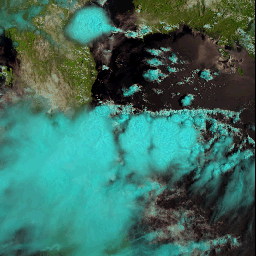

The importance of clouds to the radiation balance of the terrestrial climate is well known. Accordingly, state-of-the-art climate models include sophisticated parameterisations of the cloud variables. It has been known for decades that climate simulations are very sensitive to changes in these parameterisations. However, models can also introduce compensating errors, that hide further sensitivities, for example, some GCMs differ by almost an order of magnitude in their estimates of global ice water path while having similar global top of the atmosphere (TOA) radiation budgets. It is also well known that simulations aimed at predicting the climate in the presence of increased CO2 are also sensitive to the exact specification of the cloud parameterisations. Accordingly, the community has put an imperative on the validation of these schemes by confronting the model simulations with observations.
While high-resolution measurements obtained in experimental campaigns are necessary to develop parameterisations, the evaluation of model cloudiness requires comparison with global climatological data. Such climatological comparisons can highlight specific areas of disagreement, but do not always illuminate the reasons why the observations and models disagree as other model problems can manifest themselves in the simulated cloudiness. To some extent climate resolution simulations rely on parameterisation development and validation carried out for Numerical Weather Prediction (NWP) --- process studies at climate resolution are obviously much more difficult to carry out in a meaningful way. For comparison with climate models, observational studies restricted seasonally and/or spatially to identify specific synoptic regimes are becoming more important.
A new cloud climatology based on ATSR-2
GRAPE intends to produce a new cloud database which will include the following parameters: Cloud Optical Depth Cloud Phase Cloud Particle Size Cloud Top Pressure Cloud Fraction Cloud Water Path along with associated error measurements (enabling the use of this data in some form of data assimilation at a later date).
The database will be based on retrievals carried out using all the available ATSR-2 data (from 1995 to present), and will be produced using a method developed for Meteosat Second Generation SEVIRI measurements and tested on ATSR-2 data (hereafter, the RAL algorithm). The RAL algorithm is an application of Optimal Estimation (OE) to the cloud retrieval problem: all available measurements and all available a priori information are combined using fast radiative transfer and known error characteristics to find the most probable values of all cloud parameters simultaneously. The radiative transfer includes cloud, atmosphere and surface effects and (currently) assumes a plane-parallel single layer cloud (the 'model cloud').
Application of OE is still a somewhat novel approach to cloud parameter estimation. Traditional methods rely typically on sub-sets of measurements used to independently derive sub-sets of parameters; for example, visible (VIS) and near Infra-Red (NIR) measurements can be used to estimate visible optical depth and drop size while an independent IR split window can be used to estimate infrared optical depth and cloud temperature.
The OE method presents several advantages:
Why produce a new cloud climatology?
Despite the apparent proliferation of cloud data, the information about cloud properties is often limited to frequency information and optical thickness along with environmental data (e.g. cloud top temperature and pressure). While there is relatively good agreement in some cases between sensors for gross measures of cloudiness (e.g. seasonal and zonal means) there is still considerable disagreement in detail.
ATSR-2 data are available from 1995 until the present day, and the ATSR-2 instrument is exceptionally well calibrated. The RAL algorithm has been validated in studies for Eumetsat and will be made effective enough for the analysis of the entire ATSR-2 dataset under the auspices of the Cloudmap2 project. The 6+years of data will provide a comparable length dataset to existing climatologies, and in conjunction with future data from the AATSR instrument (due to fly on ENVISAT), a very long duration dataset is possible. Analysis of current and future missions (e.g. MODISand MERIS) may eventually provide good cloud parameters, but they will not be able to measure in the 1990s!
One microphysical parameter of great interest to the global warming community is the effective radius, re, of the droplets in clouds. re can be derived from the cloud liquid water (CLW) itself a prognostic variable in modern parameterisations. The importance of re is that it can be directly employed to couple the cloud parameterisation to the radiation, either via the cloud optical depth alone or by the cloud optical depth in conjunction with albedo and asymmetry parameters, all of which can be parameterised by a functional dependence on re. Our retrieval method provides an estimate of re (primarily based on the sensitivity of the 1.6 and 3.7 micrometre reflection to the size of the particles in the cloud), and this will be available wherever the retrieval is successful (i.e. near global coverage for the mission duration).
Particular points of scientific interest to be covered will be the interhemispheric difference in cirrus, and the quality of model predictions of cloud effective-radius in specific case studies. One of the major points of advantage of the ATSR-2 retrieval will be an accurate assessment of cloud phase, a notoriously difficult problem for model parameterizations. While high-resolution in-situ campaigns are the best way to derive such parameterisations, it is important that they are validated globally to ensure as much as possible their accuracy in a wide-range of synoptic settings.
A rigourous comparison with numerical simulations should eventually be
carried out in the context of trying to understand particular experiments,
or to understand the climate behaviour of some specific model versions.